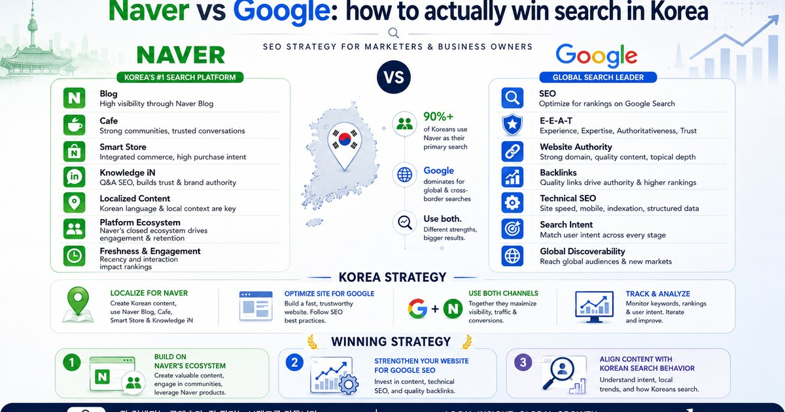
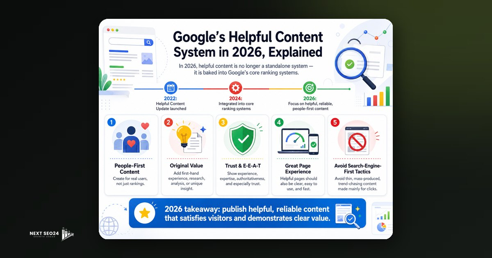
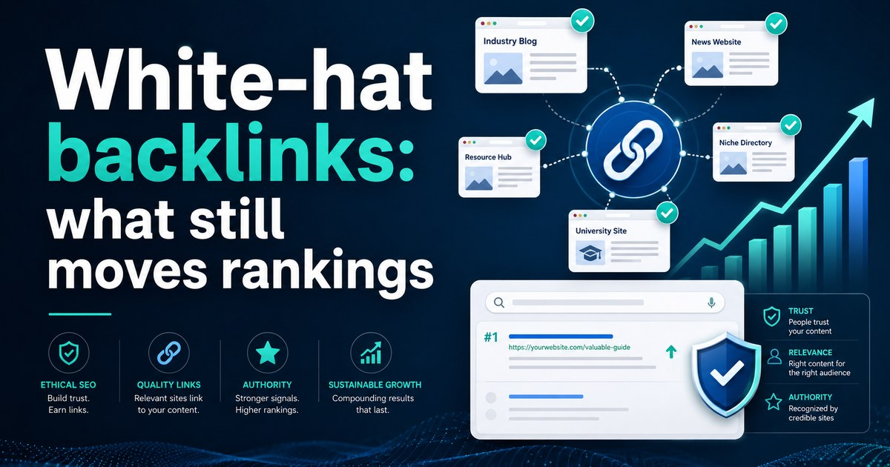
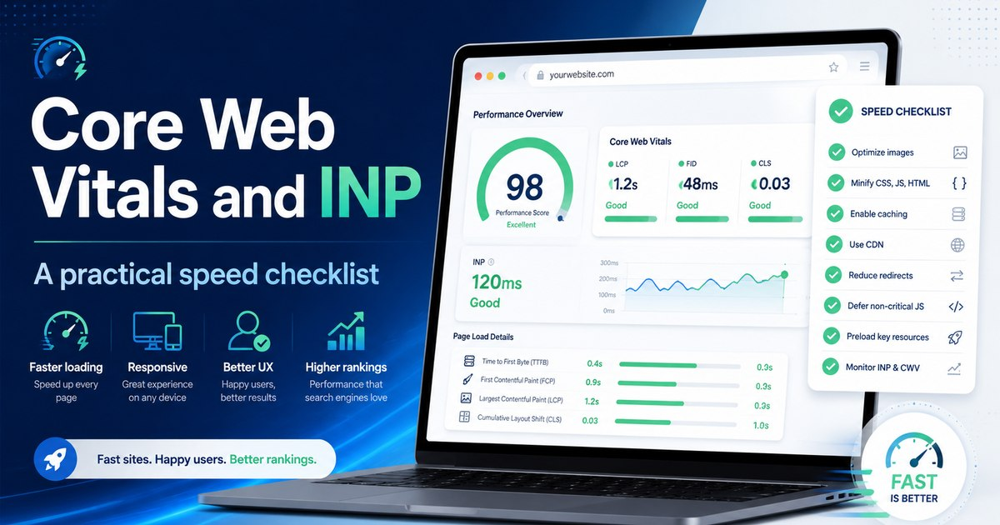
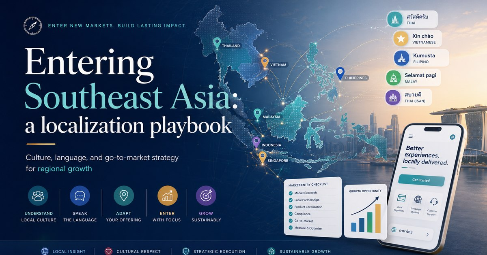
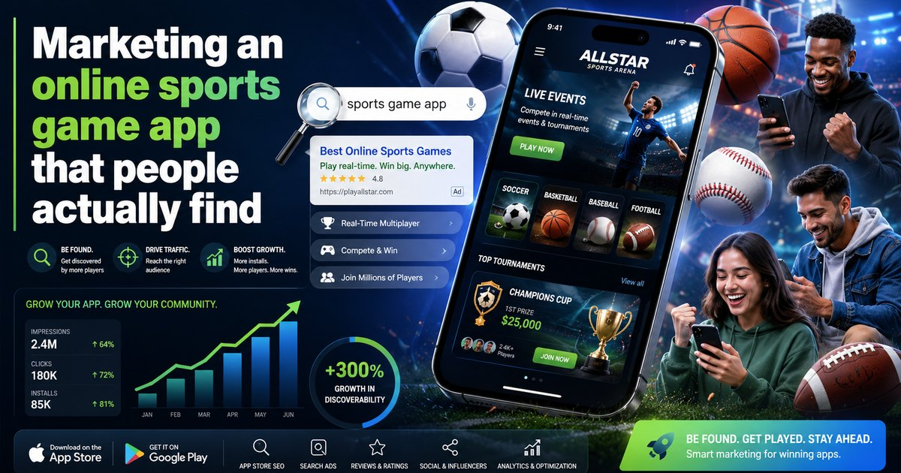
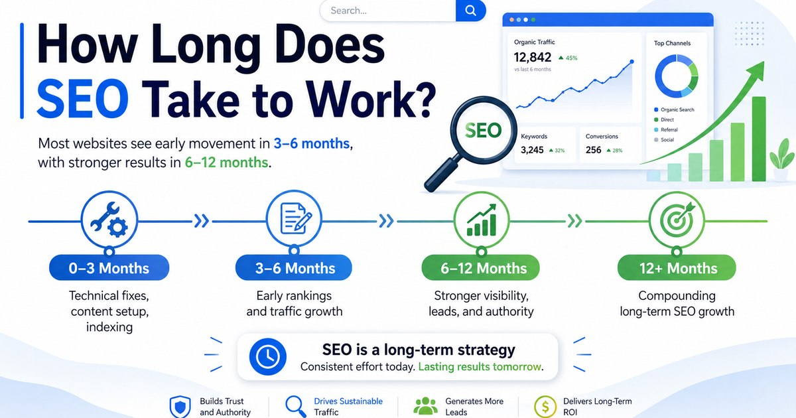
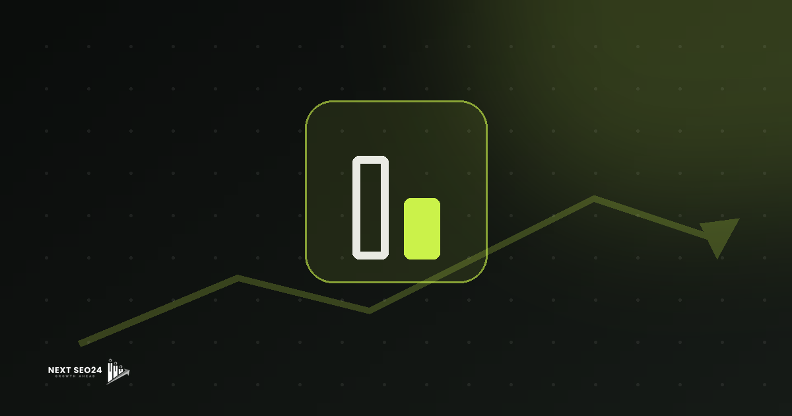

SEO & marketing, explained plainly.
Field notes from our work across Korea, Japan and Southeast Asia — Google's latest guidelines, backlinks, site speed and localization, without the jargon.

KoreaNaver vs Google: how to actually win search in Korea
Korea's search market is split between two very different engines. Here's how we decide where to invest — and why ignoring either one leaves money on the table.
Read article →
SEOGoogle's Helpful Content system in 2026, explained
It's no longer a separate update — it lives in the core algorithm and works site-wide. What that means for your content strategy.
Read article →
BacklinksWhite-hat backlinks: what still moves rankings
Links remain a top ranking signal — but only the right ones. How to earn authority safely without tripping a spam update.
Read article →
WebCore Web Vitals & INP: a practical speed checklist
FID is gone; INP is in. A no-nonsense checklist to keep your site fast — and why speed is non-negotiable for an SEO-led business.
Read article →
MarketsEntering Southeast Asia: a localization playbook
Google-dominant, multilingual and WhatsApp-first. What Korean and global brands get wrong when they expand into MY, SG and TH.
Read article →
App MarketingMarketing an online sports game app that people find
App stores are search engines too. How ASO, web SEO and localized content drive real installs for sports games across Asia.
Read article →
SEOHow long does SEO take to work?
The honest answer — and a realistic month-by-month timeline of what to expect from SEO.
Read article → PricingHow much does SEO cost in Malaysia?
Typical pricing models and RM ranges, what drives the cost, and how to compare quotes honestly.
Read article →
StrategySEO vs SEM: which should you invest in?
Paid speed vs durable organic growth — when to use each, and why most brands run both.
Read article →